En 1945, Claire Randall, infirmière de guerre tout juste revenue du front, part en Écosse avec son mari Frank pour célébrer leur mariage et lui permettre de rechercher ses ancêtres. Lors d’une promenade près d’un mystérieux cercle de pierres, Claire est soudainement projetée en 1743, en pleine Écosse des Highlands. Confrontée à un monde dangereux et instable, elle doit survivre, s’adapter… et faire des choix qui pourraient bouleverser son destin.
LES PERSONNAGES RECURRENTS
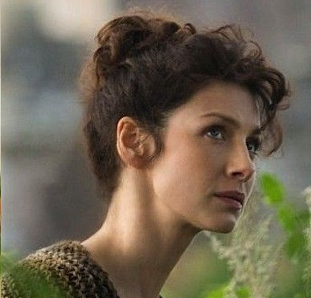
Claire Beauchamp Randall
"Sassenach"
Infirmière
En 1945, Claire est en voyage en Écosse avec son mari Frank lorsqu’un événement mystérieux la projette au 18e siècle. Propulsée dans une époque dangereuse et instable, elle doit survivre et s’adapter, tout en étant déchirée entre deux mondes et deux vies.
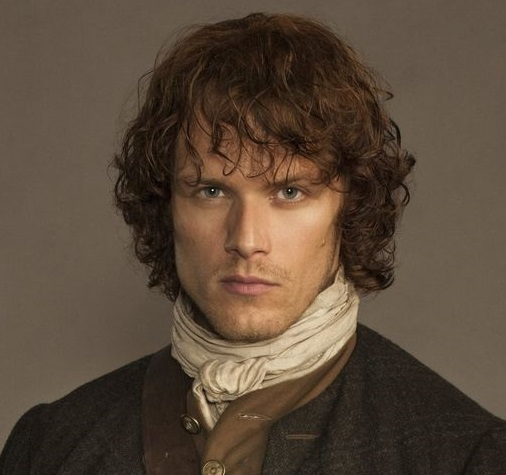
James, Alexander Malcolm MacKenzie Fraser
"Jamie", "Mr MacTavish"
Highlander
Jamie Fraser, un jeune Highlander écossais, se retrouve mêlé à des conflits politiques, des rivalités familiales et des enjeux de loyauté. Courageux et marqué par un passé difficile, il voit sa vie bouleversée par une rencontre inattendue qui changera son destin.
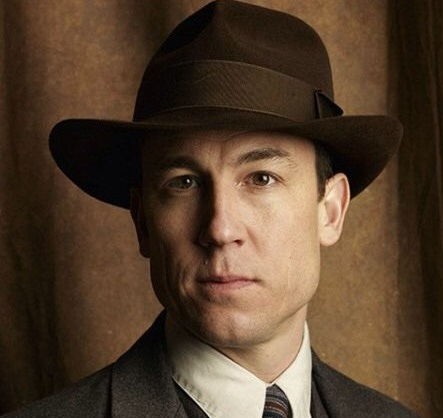
Franck Randall
Historien - 1945
Frank Randall, mari de Claire, part en Écosse en 1945 pour retracer l’histoire de ses ancêtres. Lorsque Claire disparaît mystérieusement, il se lance désespérément à sa recherche, confronté à une énigme qui défie toute logique.
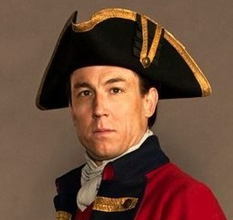
Jonathan Randall
"Black Jack Randall"
Soldat britannique
Jonathan "Black Jack" Randall, officier britannique du 18e siècle et ancêtre de Frank, joue un rôle central dans les tensions entre les Anglais et les Écossais. Froid et impitoyable, il incarne une menace constante pour ceux qui croisent son chemin, mêlant pouvoir, cruauté et obsession.
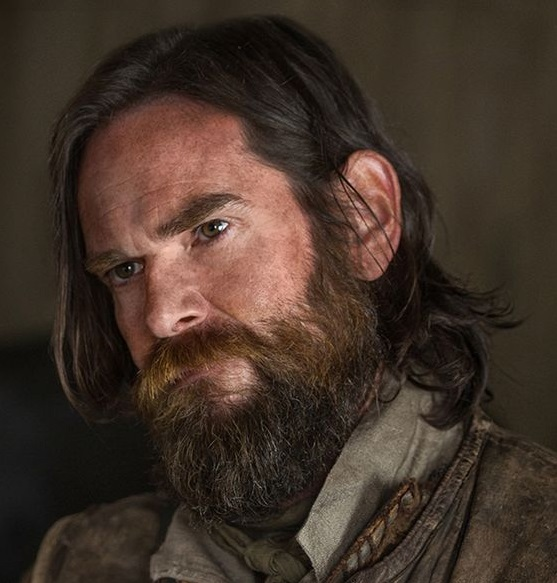
Murtagh Fitzgibbons Fraser
Highlander
Murtagh Fitzgibbons Fraser, homme loyal et taciturne, veille discrètement sur Jamie. Fidèle allié, il accompagne les protagonistes à travers les dangers des Highlands, offrant protection, conseils et soutien dans l’ombre, toujours guidé par un profond sens de l’honneur.
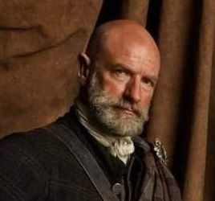
Dougal MacKenzie
Highlander
Dougal MacKenzie, chef de guerre respecté du clan MacKenzie, joue un rôle clé dans les intrigues politiques et familiales des Highlands. Stratège ambitieux et homme de tradition, il navigue entre loyauté envers son clan et les tensions grandissantes face aux autorités britanniques.
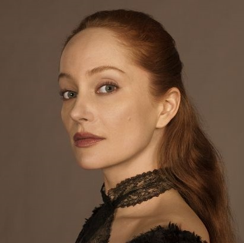
Geilis Duncan
Herboriste
Geillis Duncan est une femme énigmatique et ambitieuse qui intrigue par son comportement mystérieux et ses connaissances inhabituelles. Son parcours croise celui de Claire, révélant peu à peu des secrets et des tensions au cœur de la communauté écossaise du XVIIIe siècle.
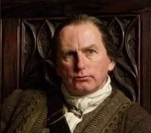
Colum MacKenzie
Laird
Colum MacKenzie, chef du clan MacKenzie et frère de Dougal, est un leader fragile mais déterminé. Malgré sa santé déclinante, il exerce une influence importante sur son clan et fait face aux défis politiques et personnels qui menacent son autorité.
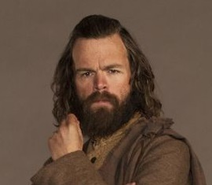
Angus MacKenzie
Highlander
Angus MacKenzie, jeune Highlander loyal et courageux, accompagne Jamie et le clan tout en participant à la surveillance étroite de Claire. Fidèle et vigilant, il joue un rôle clé dans la protection du groupe et dans la gestion des tensions qui entourent cette étrangère venue d’un autre temps.
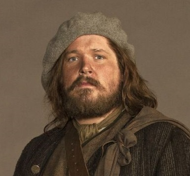
Rupert MacKenzie
Highlander
Rupert MacKenzie, oncle de Jamie et membre influent du clan, est un homme fort et loyal. Il joue un rôle important dans les conflits des Highlands et participe à la surveillance attentive de Claire, veillant à la sécurité du groupe tout en restant méfiant envers elle.
Janet Fraser Murray
"Jenny"
Maîtresse de Lallybroch
Jenny Fraser, sœur de Jamie, est une femme forte et dévouée, ancrée dans les traditions écossaises. Elle soutient sa famille face aux défis politiques et personnels qui secouent les Highlands.Très attachée à Lallybroch, la maison familiale, elle lutte pour protéger son foyer et préserver l’héritage de sa famille.
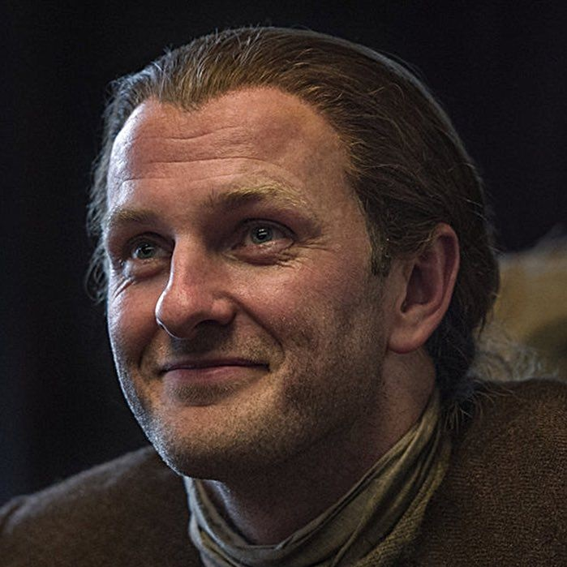
Ian Murray
Highlander
Ian Murray, beau-frère de Jamie et mari de Jenny, est un homme calme, loyal et réfléchi. Malgré sa jambe amputée, il joue un rôle essentiel dans la gestion de Lallybroch et soutient Jamie et sa famille avec courage et sagesse face aux épreuves qui frappent les Highlands.
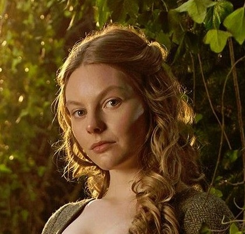
Laoghaire MacKenzie
Habitante de Leoch
Laoghaire est une jeune femme du clan MacKenzie, vive et déterminée. Son attirance pour Jamie et sa jalousie envers Claire l’entraînent dans une série d’actions qui influencent les relations au sein du château Leoch et du clan.